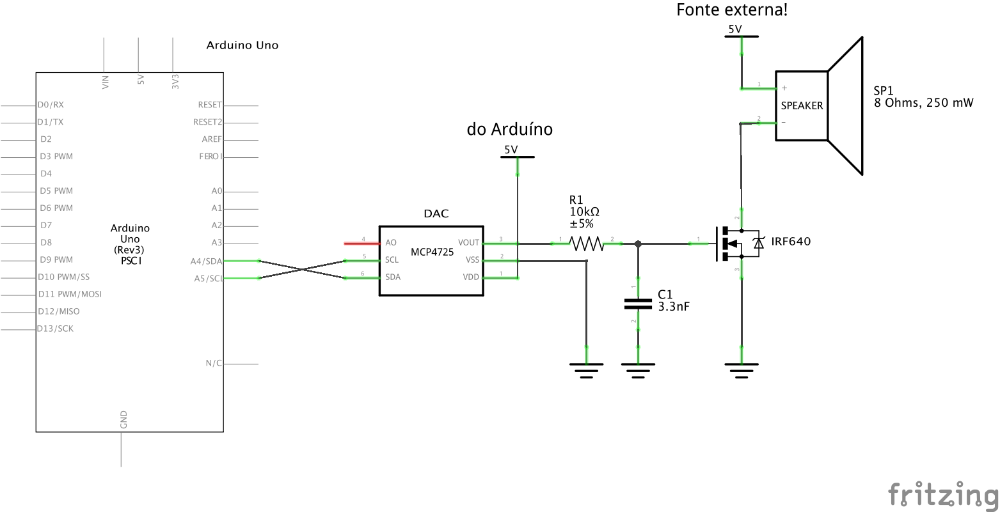

Lab 3) Gerador de Senide usando DAC
A idia agora usar um DAC real, placa sugerida: mdulo DAC MPC 4725 que de 12-bits. Isto implica que esta placa aceita valores variando na faixa nt de 0 at 4025 (). Esta placa trabalha com comunicao I2C. Ver pgina Trabalhar com o Mdulo DAC, para ver maiores detalhes e saber como instalar o driver para esta placa na IDE do Arduino.
Lab 3) Gerador de Senide usando DACObjetivoProcedimentoHardware necessarioMontagem sugeridaDetalhes de SoftwareDicasDica #2Teste de "Desempenho Puro"AnexosA. Instalao da Biblioteca Adafruit MCP4725B. Em caso de erro associado com "Adafruit_BusIO_Register.h"
Objetivo
Tentar gerar uma onda senoidal o mais rpido possvel usando placa Arduino Uno e ISR para garantir sua frequncia.
Procedimento
Programar uma ISR para rodar com taxa de amostragem de 10 KHz.
Programar a rotina ISR para gerar 20 ou 10 pontos de uma sende.
Comprovar usando osciloscpio:
- A frequncia da sende sendo gerada (Canal 1 do osciloscpio);
- O tempo de processamento decorrido com a ISR. Para tanto, no incio da ISR "subir" o nvel lgico de certo pino do Arduno e uma vez saindo da ISR, "baixar" o nvel lgico neste pino. Se esta sada for verificada no osciloscpio (Canal 2), deve ser comprovada a frequncia de amostragem de 10 KHz e o correspondente "duty-cycle" vai corresponder ao tempo de processamento dedicado ISR. Tentar medir este valor.
Montar relatrio final documentando:
- Ligaes eltricas efetuadas;
- Clculos dos registradores/timers associados com a ISR para gerar a taxa de interrupo 10 KHz.
- Explicar a forma como foram sintetizados os pontos da senide;
- Mostrar os grficos capturados via osciloscpio.
Hardware necessario
- Placa Arduino Uno;
- Mdulo DAC MCP4725;
- Resistor de 10 K;
- Capacitor de 3,3 nF;
- Transistor IRF640;
- Alto-falante de 8 250 mW;
- Cabos conectores;
- Mini proto-board.
Montagem sugerida
Fixar o mdulo DAC no Proto-board;
Realizar as devidas conexes ao DAC:
Pino no
DACPino no
ArdunoVcc Algum pino Vcc GND GND SDA (Data) A4 SCL (Clock) A5 * VOUT Sada analgica
[0 .. 5 Volts ]
* pino A5 do Arduino (aparentemente j contm resistor pullup de 10K para 5 Volts no DAC, e esta sada j trabalha com um sinal de 440 KHz).
Diagrama eltrico:

Detalhe da ligao do IRF640 ao alto-falante:

Detalhes de Software
Ser necessrio programar a ISR para ser chamada na taxa de 10 KHz, ou a cada: segundos ou cada 0,1 ms. Lembre que o clock do Arduno Uno normalmente de 16 MHz e considere que seu uP gasta 4 ciclos de clock para executar uma instruo (tpico de processadores RISC), o que significa que cada instruo mnima leva segundos para ser executada ou 0,375 ms. Ou seja, sim, estamos tentando colocar o Arduno no limite de sua capacidade de processamento.
A fim de reduzir custos computacionais, se sugere que o prprio Arduno no bloco
void setup() {...}calcule os NPOINTS necessrios para gerar os pontos da senide e os armazene num array (dever ser uma varivel global). Considerar que devem ser gerados valoresintna faixa de [0, 4095] que correspondem aos 12-bits do DAC sendo usado.A rotina ISR deve bem "enxuta", isto , exigir o menor esforo computacional possvel e realizar apenas 3 coisas:
- Enviar para o DAC o valor atual do vetor que armazena os pontos da senide;
- Incrementar o ndice que aponta para a prxima posio neste vetor;
- Testar se alcanou o fim do vetor (NPOINTS) e se sim, voltar o (valor do) ndice zero.
- No esquecer de alternar o nvel lgico de um pino qualquer do Arduno para verificar com auxlio do osciloscpio se a rotina ISR est realmente sendo executada na taxa requerida e quanto de processamento ocupa a mesma.
Realizar testes, documentando os resultados. O ideal seria apresentar um grfico obtido com auxlio do osciloscpio que mostre no canal 1, a onda senoidal sendo gerada e no canal 2, o pino que muda de estado indicando a execuo da ISR.
Dicas
Para minimizar o esforo computacional dentro da ISR, melhor evitar if pesados e usar o operador mdulo (%) apenas se o compilador no transformar isso em instrues mais simples. Outra alternativa um teste condicional simples (que tende a ser mais rpido em uC's sem diviso rpida).
Segue sugesto de cdigo compacto em C:
x// Suponha que esta seja a interface do DACextern void dac_setVoltage(uint16_t valor);// Vetor de at 20 pontosvolatile uint16_t vetor[MAX_POINTS]; // varivel globalvolatile uint8_t NPOINTS = 0; // quantidade de pontos vlidos// ndice atualvolatile uint8_t index = 0; // varivel global// --- Rotina de interrupo (ISR) ---void ISR_timer(void) { // 1. Envia valor atual para o DAC dac_setVoltage(vetor[index]); // 2. Incrementa ndice index++; // 3. Se chegou no fim, volta para zero if (index >= NPOINTS) { index = 0; }}Observaes:
- O cdigo acima apenas um exemplo e no pode, assim como foi apresentado, ser diretamente aplicado no Arduino! Use como exemplo.
indexeNPOINTSforam definidos comouint8_tporque o vetor tem no mximo 20 pontos. Assim, evita-se variveis maiores que o necessrio.- A checagem do "overflow" (
if (index >= NPOINTS)) muito leve e geralmente mais rpida que usar:index = (index+1) % NPOINTS;principalmente em uC's pequenos (como AVR do Arduino). volatilefoi usado porque tantoindexquantoNPOINTSpodem ser acessados dentro e fora da ISR.- A ISR deve ser o mais curta possvel, sempre, sem chamadas extras nem operaes desnecessrias.
Dica #2
Existe uma forma ainda mais rpida de exceutar a ISR, mas envolve o uso de "mscara binria" e s funciona se NPOINTS for compatvel com potncia de 2. Por exemplo, suponha que NPOINT = 16, ento podemos fazer algo como:
xxxxxxxxxx// potncia de 2volatile uint16_t vetor[NPOINTS];volatile uint8_t index = 0;void ISR_timer(void) { dac_setVoltage(vetor[index]); index = (index + 1) & MASK; // volta automaticamente para 0}Nesse caso no h if nem diviso, s uma operao AND bit a bit. Mas para isto NPOINTS deve ser potncia de 2.
Teste de "Desempenho Puro"
Outro teste que poderia ser realizado, mas que no garante nenhum compromisso com a taxa de amostragem, seria usar a seo void loop() {..} do Arduno apenas para comandar o DAC e atualizar a varivel ndice do vetor. Eventualmente se poderia acrescentar neste cdigo, instruo para alternar o nvel de algum pino de "controle" do Arduino, assim, usando o osciloscpio, se poderia comprovar a mxima frequncia da senide possvel de ser gerada (canal 1). E no canal 2 do osciliscpio, conectado no pino de controle seria observada uma onda quadrada cujos ciclos (em nvel lgico baixo e em nvel lgico alto) corresponderiam ao tempo gasto pela Arduno para processar esta seo de cdigo. Este teste resultaria algo como:
xxxxxxxxxx// Fernando Passold, em 27.08.2025// biblioteca I2C// necessrio para acessar o DAC// Pino de controle (por ex. 8)bool estado = 0;// Vetor da senoide// associado com os 12-bits do DAC: 2^12-1=4095// qtdade de pontos usados para sintetizar ciclo completo senideint senoide[NPOINTS] = { 2047, 2682, 3274, 3784, 4094, 4094, 3784, 3274, 2682, 2047, 1412, 820, 310, 0, 0, 310, 820, 1412, 2047, 2682}; // a inicializao deste vetor opcional// variveis associadas com o DACAdafruit_MCP4725 dac; // para instanciar o objeto "dac" pertencente a classe "Adafruit_MCP4725"int ender_DAC = 0x60; // endereo I2C do DACbool DAC_found = false; // indica problemas para acessar DAC// ndice do vetorint index = 0;// funo para identificar DAC// Retorna true se mdulo encontrado// caso contrrio retorna falsebool found_DAC(void) { Serial.println(""); Serial.println("Buscando Mdulo DAC MCP4725"); for (ender_DAC = 0x60; ender_DAC <= 0x65; ender_DAC++) { Serial.print("Testando endereo: 0x"); Serial.print(ender_DAC, HEX); DAC_found = dac.begin(ender_DAC); if (DAC_found) { Serial.println(" <-- Encontrado, Ok"); digitalWrite(PINO_CONTROLE, HIGH); break; // sai do for } Serial.println(""); return true; } if (!DAC_found) { Serial.println("Ops... Modulo DAC MCP4725 no encontrado"); return false; }}// Funo que calcula pontos da senide// Armazena no vetor senoide[] seus NPOINTSvoid gera_senoide() { Serial.println("Gerando pontos da Senoide:"); for (int i = 0; i < NPOINTS; i++) { double ang = 2.0 * M_PI * i / NPOINTS; senoide[i] = (int)(((sin(ang) + 1.0) * 0.5) * MAXVAL); Serial.print(senoide[i]); // Mostra valor gerado Serial.print(", "); // para prximo valor if ((i + 1) % 8 == 0) { Serial.println(); // quebra linha a cada 8 valores } } Serial.print("\b\b"); // backspace para apagar ", " Serial.println(); // Fim}void setup() { Serial.begin(115200); // ativa porta serial delay(100); // espera porta inicializar Serial.println(""); Serial.println("Programa para gerar Senoide"); Serial.println("* Teste de Desempenho Puro *"); pinMode(PINO_CONTROLE, OUTPUT); digitalWrite(PINO_CONTROLE, HIGH); //indica que estamos dentro da seo setup DAC_found = found_DAC(); if (!DAC_found) { // Modulo DAC MCP4725 no encontrado Serial.println("Programa sendo encerrado.. Sorry!"); return; // encerra setup() e no segue para loop() } gera_senoide(); // prepara vetor da senoide index = 0; // garante que inicia no primeiro ponto Serial.println("Iniciando senide..."); digitalWrite(PINO_CONTROLE, LOW); // indica sada da seo setup}void loop() { // O bloco abaixo poderia ter sido mantido // mas queremos verificar a taxa mxima alcanada pelo Arduino Uno // Alterna o pino de controle // estado = !estado; // faz "toggle" no nvel lgico do pino de controle // digitalWrite(PINO_CONTROLE, estado); // DAC_found = dac.setVoltage(senoide[index], false); // if (!DAC_found) { // Modulo DAC MCP4725 desconectado! // digitalWrite(PINO_CONTROLE, LOW); // Serial.println("Modulo DAC MCP4725 foi desconectado"); // Serial.println("Programa sendo encerrado.. Sorry!"); // exit(0); // finaliza programa, no garantido no Arduno // /*** ou voc pode tentar usar: // set_sleep_mode(SLEEP_MODE_PWR_DOWN); // sleep_enable(); // sleep_cpu(); // entra em modo de baixo consumo e s volta com reset/interrupo // } // Bloco mnimo necessrio para output dos pontos da senoide // Incrementa ndice index++; if (index >= NPOINTS) { index = 0; // retorna ao incio do vetor de pontos }}A execuo deste cdigo gera a seguine sada no terminal (porta serial):
xxxxxxxxxx< falta completar >
E gerou a seguinte forma de onda:
< faltou capturar tela >
Fim.
Anexos
A. Instalao da Biblioteca Adafruit MCP4725
V at a pgina https://github.com/adafruit/Adafruit_MCP4725, acesse o boto verde contendo " <> Code v " e com o boto direito do mouse sobre este boto, faa abrir um menu pull-down e selecione: , como mostra a figura abaixo:

Cliando em "Download ZIP" ser baixado um arquivo compactado ZIP.
Basta ir para a IDE do Arduno e buscar por: Menu >> Rascunho > Incluir Biblioteca > Adicionar biblioteca .ZIP..., como mostra a figura abaixo:

E ento selecionar a pasta (provavelmente /Downloads) onde antes voc baixou o arquivo zipado.
Pronto.
B. Em caso de erro associado com "Adafruit_BusIO_Register.h"
Em caso de erro do tipo:
xxxxxxxxxxResolveLibrary(Adafruit_MCP4725.h) -> candidates: [Adafruit MCP4725@2.0.2]fatal error: Adafruit_BusIO_Register.h: No such file or directory ^~~~~~~~~~~~~~~~~~~~~~~~~~~compilation terminated.Alternatives for Adafruit_BusIO_Register.h: []ResolveLibrary(Adafruit_BusIO_Register.h) -> candidates: []exit status 1Compilation error: exit status 1Esta mensagem de erro:
xxxxxxxxxx#include <Adafruit_BusIO_Register.h> ^~~~~~~~~~~~~~~~~~~~~~~~~~~~ compilao encerrada. Alternativas para Adafruit_BusIO_Register.h: [] ResolveLibrary(Adafruit_BusIO_Register.h)indica que o IDE do Arduino no conseguiu localizar o arquivo de cabealho especificado, Adafruit_BusIO_Register.h. Isso normalmente ocorre quando uma biblioteca necessria no est instalada ou no reconhecida corretamente pela IDE.
Faltaria instalar a biblioteca faltante:
- Abra o IDE do Arduino.
- Navegue at Menu >> Rascunho > Incluir Biblioteca > Gerenciar Bibliotecas...
- Na janela Gerenciador de Bibliotecas, procure por "Adafruit BusIO".
- Localize a biblioteca "Adafruit BusIO" nos resultados da pesquisa e clique no boto "Instalar":

- Se recomenda re-iniciar o Arduino IDE e recompilar o cdigo.
Fernando Passold, em 27/08/2025